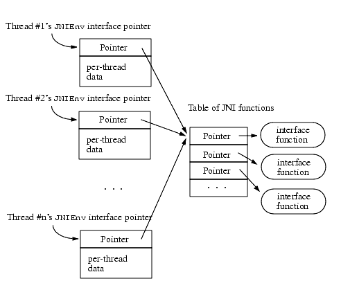

| Contents | Prev | Next | Index | The Java Native Interface Programmer's Guide and Specification |
This chapter gives an overview of the JNI design. Where necessary, we also provide the underlying technical motivation. The design overview serves as the specification for key JNI concepts such as the JNIEnv interface pointer, local and global references, and field and method IDs. The technical motivation aims at helping the reader to understand various design trade-offs. On a few occasions, we will discuss how certain features may be implemented. The purpose of such discussion is not to present a practical implementation strategy, but instead to clarify the subtle semantic issues.
The concept of a programming interface that bridges different languages is not new. For example, C programs can typically call functions written in languages such as FORTRAN and assembly. Similarly, implementations of programming languages such as LISP and Smalltalk support a variety of foreign function interfaces.
The JNI addresses an issue similar to that addressed by the interoperability mechanisms supported by other languages. There is, however, a significant difference between the JNI and the interoperability mechanisms used in many other languages. The JNI is not designed for a particular implementation of the Java virtual machine. Rather, it is a native interface that can be supported by every implementation of the Java virtual machine. We will further elaborate on this as we describe the JNI design goals.
The most important goal of the JNI design is ensuring that it offers binary compatibility among different Java virtual machine implementations on a given host environment. The same native library binary will run on different virtual machine implementations on a given host environment without the need for recompilation.
To achieve this goal, the JNI design cannot make any assumptions about the internal details of the Java virtual machine implementation. Because Java virtual machine implementation technologies are evolving rapidly, we must be careful to avoid introducing any constraints that may interfere with advanced implementation techniques in the future.
The second goal of JNI design is efficiency. To support time-critical code, the JNI imposes as little overhead as possible. We will see, however, that our first goal, the need for implementation-independence, sometimes requires us to adopt a slightly less efficient design than we might have otherwise. We strike a compromise between efficiency and implementation-independence.
Lastly, the JNI must be functionally complete. It must expose enough Java virtual machine functionality to enable native methods and applications to accomplish useful tasks.
It is not the goal of JNI to be the only native programming interface supported by a given Java virtual machine implementation. A standard interface benefits programmers who would like to load their native code libraries into different Java virtual machine implementations. In some cases, however, a lower-level implementation-specific interface may achieve higher performance. In other cases, the programmer might use a higher-level interface to build software components.
Before an application can invoke a native method, the virtual machine must locate and load a native library that contains an implementation of the native method.
Native libraries are located by class loaders. Class loaders have many uses in the Java virtual machine including, for example, loading class files, defining classes and interfaces, providing namespace separation among software components, resolving symbolic references among different classes and interfaces, and finally, locating native libraries. We assume that you have a basic understanding of class loaders, so we will not go into the details of how they load and link classes in the Java virtual machine. You can find out more details on class loaders in the paper Dynamic Class Loading in the Java Virtual Machine, by Sheng Liang and Gilad Bracha, published in the proceedings of the ACM Conference on Object Oriented Programming Systems, Languages, and Applications (OOPSLA), 1998.
Class loaders provide the namespace separation needed to run multiple components (such as the applets downloaded from different web sites) inside an instance of the same virtual machine. A class loader maintains a separate namespace by mapping class or interface names to actual class or interface types represented as objects in the Java virtual machine. Each class or interface type is associated with its defining loader, the loader that initially reads the class file and defines the class or interface object. Two class or interface types are the same only when they have the same name and the same defining loader. For example, in Figure 11.1, class loaders L1 and L2 each define a class named C. These two classes named C are not the same. Indeed, they contain two different f methods that have distinct return types.
The dotted lines in the above figure represent the delegation relationships among class loaders. A class loader may ask another class loader to load a class or an interface on its behalf. For example, both L1 and L2 delegate to the bootstrap class loader for loading the system class java.lang.String. Delegation allows system classes to be shared among all class loaders. This is necessary because type safety would be violated if, for example, application and system code had different notions of what the type java.lang.String was.
Now suppose the method f in both classes C are native methods. The virtual machine locates the native implementation for both C.f methods using the name "C_f". To ensure that each C class links with the correct native function, each class loader must maintain its own set of native libraries, as shown in Figure 11.2.
Because each class loader maintains a set of native libraries, the programmer may use a single library to store all the native methods needed by any number of classes as long as those classes have the same defining loader.
Native libraries will automatically be unloaded by the virtual machine when their corresponding class loaders are garbage collected (§11.2.5).
Native libraries are loaded by the System.loadLibrary method. In the following example, the static initializer of class Cls loads a platform-specific native library in which the native method f is defined:
package pkg;
class Cls {
native double f(int i, String s);
static {
System.loadLibrary("mypkg");
}
}
The argument to System.loadLibrary is a library name chosen by the programmer. Software developers are responsible for choosing native library names that minimize the chance of name clashes. The virtual machine follows a standard, but host environment specific, convention to convert the library name to a native library name. For example, the Solaris operating system converts the name mypkg to libmypkg.so, while the Win32 operating system converts the same mypkg name to mypkg.dll.
When the Java virtual machine starts up, it constructs a list of directories that will be used to locate native libraries for application classes. The contents of the list are dependent upon the host environment and the virtual machine implementation. For example, under the Win32 JDK or Java 2 SDK releases, the list of directories consists of the Windows system directories, the current working directory, and the entries in the PATH environment variable. Under the Solaris JDK or Java 2 SDK releases, the list of directories consists of the entries in the LD_LIBRARY_PATH environment variable.
System.loadLibrary throws an UnsatisfiedLinkError if it fails to load the named native library. System.loadLibrary completes silently if an earlier call to System.loadLibrary has already loaded the same native library. If the underlying operating system does not support dynamic linking, all native methods must be prelinked with the virtual machine. In this case, the virtual machine completes the System.loadLibrary calls without actually loading the library.
The virtual machine internally maintains a list of loaded native libraries for each class loader. It follows three steps to determine which class loader should be associated with a newly loaded native library:
System.loadLibrary
In the following example, the native library foo will be associated with C's defining loader:
class C {
static {
System.loadLibrary("foo");
}
}
Java 2 SDK release 1.2 introduces a new ClassLoader.findLibrary method that allows the programmer to specify a custom library loading policy that is specific to a given class loader. The ClassLoader.findLibrary method takes a platform-independent library name (such as mypkg) as an argument, and:
null to instruct the virtual machine to follow the default library search path,c:\\mylibs\\mypkg.dll").
ClassLoader.findLibrary is typically used with another method added in the Java 2 SDK release 1.2, System.mapLibraryName. System.mapLibrary-Name maps platform-independent library names (such as mypkg) to platform-dependent library file names (such as mypkg.dll).
You can override the default library search path in Java 2 SDK release 1.2 by setting the property java.library.path. For example, the following command line starts up a program Foo which needs to load a native library in the c:\mylibs directory:
java -Djava.library.path=c:\mylibs Foo
The virtual machine does not allow a given JNI native library to be loaded by more than one class loader. Attempting to load the same native library by multiple class loaders causes an UnsatisfiedLinkError to be thrown. The purpose of this restriction is to make sure that namespace separation based on class loaders is preserved in native libraries. Without this restriction, it becomes much easier to mistakenly intermix classes and interfaces from different class loaders through native methods. Consider a native method Foo.f that caches its own defining class Foo in a global reference:
JNIEXPORT void JNICALL
Java_Foo_f(JNIEnv *env, jobject self)
{
static jclass cachedFooClass; /* cached class Foo */
if (cachedFooClass == NULL) {
jclass fooClass = (*env)->FindClass(env, "Foo");
if (fooClass == NULL) {
return; /* error */
}
cachedFooClass = (*env)->NewGlobalRef(env, fooClass);
if (cachedFooClass == NULL) {
return; /* error */
}
}
assert((*env)->IsInstanceOf(env, self, cachedFooClass));
... /* use cachedFooClass */
}
We expect the assertion to succeed because Foo.f is an instance method and self refers to an instance of Foo. The assertion could fail, however, if two different Foo classes are loaded by class loaders L1 and L2 and both Foo classes are linked with the previous implementation of Foo.f. The cachedFooClass global reference will be created for the Foo class whose f method is invoked first. A later invocation of the f method of the other Foo class will cause the assertion to fail.
JDK release 1.1 did not properly enforce native library separation among class loaders. This means that it would be possible for two classes in different class loaders to link with the same native method. As shown by the previous example, the approach in JDK release 1.1 leads to the following two problems:
The virtual machine unloads a native library after it garbage collects the class loader associated with the native library. Because classes refer to their defining loaders, this implies that the virtual machine has also unloaded the class whose static initializer called System.loadLibrary and loaded the native library (§11.2.2).
The virtual machine attempts to link each native method before invoking it for the first time. The earliest time that a native method f can be linked is the first invocation of a method g, where there is a reference from the method body of g to f. Virtual machine implementations should not try to link a native method too early. Doing so could lead to unexpected linkage errors because the native library that implements the native method may not have been loaded.
Linking a native method involves the following steps:
The virtual machine deduces the name of the native function from the name of the native method by concatenating the following components:
Java_"_") separator__") followed by the encoded argument descriptorThe virtual machine iterates through all native libraries associated with the defining loader to search for a native function with an appropriate name. For each native library, the virtual machine looks first for the short name, that is, the name without the argument descriptor. It then looks for the long name, which is the name with the argument descriptor. Programmers need to use the long name only when a native method is overloaded with another native method. However, this is not a problem if the native method is overloaded with a non-native method. The latter does not reside in a native library.
In the following example, the native method g does not have to be linked using the long name because the other method g is not a native method.
class Cls1 {
int g(int i) { ... } // regular method
native int g(double d);
}
The JNI adopts a simple name-encoding scheme to ensure that all Unicode characters translate into valid C function names. The underscore ("
_") character separates the components of fully qualified class names. Because a name or type descriptor never begins with a number, we can use _0, ..., _9 for escape sequences, as illustrated below:
_0XXXX
_1
_2
_3
If native functions matching an encoded native method name are present in multiple native libraries, the function in the native library that is loaded first is linked with the native method. If no function matches the native method name, an UnsatisfiedLinkError is thrown.
The programmer can also call the JNI function RegisterNatives to register the native methods associated with a class. The RegisterNatives function is particularly useful with statically linked functions.
The calling convention determines how a native function receives arguments and returns results. There is no standard calling convention among various native languages, or among different implementations of the same language. For example, it is common for different C++ compilers to generate code that follows different calling conventions.
It would be difficult, if not impossible, to require the Java virtual machine to interoperate with a wide variety of native calling conventions. The JNI requires the native methods to be written in a specified standard calling convention on a given host environment. For example, the JNI follows the C calling convention on UNIX and the stdcall convention on Win32.
When programmers need to call functions that follow a different calling convention, they must write stub routines that adapt the JNI calling conventions to those of the appropriate native language.
Native code accesses virtual machine functionality by calling various functions exported through the JNIEnv interface pointer.
A JNIEnv interface pointer is a pointer to thread-local data, which in turn contains a pointer to a function table. Every interface function is at a predefined offset in the table. The JNIEnv interface is organized like a C++ virtual function table and is also like a Microsoft COM interface. Figure 11.3 illustrates a set of JNIEnv interface pointers.
JNIEnv Interface Pointers
Functions that implement a native method receive the JNIEnv interface pointer as their first argument. The virtual machine is guaranteed to pass the same interface pointer to native method implementation functions called from the same thread. However, a native method can be called from different threads, and therefore may be passed different JNIEnv interface pointers. Although the interface pointer is thread-local, the doubly indirected JNI function table is shared among multiple threads.
The reason the JNIEnv interface pointer refers to a thread-local structure is that some platforms do not have efficient support for thread-local storage access. By passing around a thread-local pointer, the JNI implementation inside the virtual machine can avoid many thread-local storage access operations that it would otherwise have to perform.
Because the JNIEnv interface pointer is thread-local, native code must not use the JNIEnv interface pointer belonging to one thread in another thread. Native code may use the JNIEnv pointer as a thread ID that remains unique for the lifetime of the thread.
There are several advantages of using an interface pointer, as opposed to hard-wired function entries:
-Xcheck:jni option that optionally turns on additional checks for JNI functions.JNIEnv-like interfaces in the future. Although we do not yet foresee the need to do so, a future version of the Java platform can support a new JNI function table, in addition to the one pointed to by the JNIEnv interface in the 1.1 and 1.2 releases. Java 2 SDK release 1.2 introduces a JNI_Onload function, which can be defined by a native library to indicate the version of the JNI function table needed by the native library. Future implementations of Java virtual machines can simultaneously support multiple versions of JNI function tables, and pass the correct version to individual native libraries depending upon their needs.Primitive data types, such as integers, characters, and so on, are copied between the Java virtual machine and native code. Objects, on the other hand, are passed by reference. Each reference contains a direct pointer to the underlying object. The pointer to the object is never directly used by native code. From the native code's point of view, references are opaque.
Passing references, instead of direct pointers to objects, enables the virtual machine to manage objects in more flexible ways. Figure 11.4 illustrates one such flexibility. While native code is holding a reference, the virtual machine may perform a garbage collection that results in the object being copied from one area of memory to another. The virtual machine can automatically update the content of the reference so that although the object has moved, the reference is still valid.
Figure 11.4 Relocating an Object while Native Code Holds a ReferenceThe JNI creates two kinds of object references for native code: local and global references. Local references are valid for the duration of a native method invocation and are automatically freed after the native method returns. Global references remain valid until they are explicitly freed.
Objects are passed to native methods as local references. Most JNI functions return local references. The JNI allows the programmer to create global references from local references. JNI functions that take objects as arguments accept both global and local references. A native method may return either a local or a global reference to the virtual machine as its result.
Local references are only valid in the thread in which they are created. Native code must not pass local references from one thread to another.
A NULL reference in the JNI refers to the null object in the Java virtual machine. A local or global reference whose value is not NULL does not refer to a null object.
To implement local references, the Java virtual machine creates a registry for each transition of control from the virtual machine to a native method. A registry maps nonmovable local references to object pointers. Objects in the registery cannot be garbage collected. All objects passed to the native method, including those that are returned as the results of JNI function calls, are automatically added to the registry. The registry is deleted after the native method returns, allowing its entries to be garbage collected. Figure 11.5 illustrates how the local references registry is created and deleted. The Java virtual machine frame that corresponds to the native method contains a pointer to the local reference registry. A method D.f calls native method C.g. C.g is implemented by the C function Java_C_g. The virtual machine creates a local reference registry before entering Java_C_g and deletes the local reference registry after Java_C_g returns.
There are different ways to implement a registry, such as using a stack, a table, a linked list, or a hash table. Although reference counting may be used to avoid duplicated entries in the registry, a JNI implementation is not obliged to detect and collapse duplicate entries.
Local references cannot be implemented faithfully by conservatively scanning the native stack. Native code may store local references into global or C heap data structures.
Java 2 SDK release 1.2 introduces a new kind of global reference: weak global references. Unlike normal global references, a weak global reference allows the referenced object to be garbage collected. After the underlying object is garbage collected, a weak global reference is cleared. Native code can test whether a weak global reference is cleared by using IsSameObject to compare the reference against NULL.
The JNI provides a rich set of accessor functions for references to objects. This means that the same native method implementation works no matter how the virtual machine represents objects internally. This is a crucial design decision enabling the JNI to be supported by any virtual machine implementation.
The overhead of using accessor functions through opaque references is higher than that of direct access to C data structures. We believe that, in most cases, native methods perform nontrivial tasks that overshadow the cost of the extra function call.
The function call overhead is not acceptable, however, for repeated access to values of primitive data types in large objects, such as integer arrays and strings. Consider native methods that are used to perform vector and matrix calculations. It would be grossly inefficient to iterate through an integer array and retrieve every element with a function call.
One solution introduces a notion of "pinning" so that the native method can ask the virtual machine not to move the contents of an array. The native method then receives a direct pointer to the elements. This approach, however, has two implications:
The JNI adopts a compromise that addresses both of the above problems.
First, the JNI provides a set of functions (for example, GetIntArrayRegion and SetIntArrayRegion) to copy primitive array elements between a segment of a primitive array and a native memory buffer. Use these functions if the native method needs to access only a small number of elements in a large array or if the native method needs to make a copy of the array anyway.
Second, programmers can use another set of functions (for example, GetInt-ArrayElements) to try to obtain a pinned version of array elements. Depending upon the virtual machine implementation, however, these functions may cause storage allocation and copying. Whether these functions in fact copy the array depends upon the virtual machine implementation as follows:
Native code calls a third set of functions (for example, ReleaseInt-ArrayElements) to inform the virtual machine that the native code no longer needs to access the array elements. When that happens, the virtual machine either unpins the array or reconciles the original array with its nonmovable copy and frees the copy.
This approach provides flexibility. A garbage collector algorithm can make separate decisions about copying or pinning for each array. Under a particular implementation scheme the garbage collector might copy small arrays, but pin large arrays.
Finally, Java 2 SDK release 1.2 introduces two new functions: GetPrimitiveArrayCritical and ReleasePrimitiveArrayCritical. These functions can be used in ways similar to, for example, GetIntArrayElements and ReleaseInt-ArrayElements. There are, however, significant restrictions on the native code after it obtains a pointer to array elements using GetPrimitiveArrayCritical and before it releases the pointer using ReleasePrimitiveArrayCritical. Inside a "critical region" the native code should not run for an indefinite period of time, must not invoke arbitrary JNI functions, and must not perform operations that might cause the current thread to block and wait for another thread in the virtual machine. Given these restrictions, the virtual machine can temporarily disable garbage collection while giving the native code direct access to array elements. Because no pinning support is needed, GetPrimitiveArrayCritical is more likely to return a direct pointer to the primitive array elements than, for example, GetIntArrayElements.
A JNI implementation must ensure that native methods running in multiple threads can simultaneously access the same array. For example, the JNI may keep an internal counter for each pinned array so that one thread does not unpin an array that is also pinned by another thread. Note that the JNI does not need to lock primitive arrays for exclusive access by a native method. Simultaneously updating an array from different threads is allowed, although this leads to nondeterministic results.
The JNI allows native code to access fields and to call methods defined in the Java programming language. The JNI identifies methods and fields by their symbolic names and type descriptors. A two-step process factors out the cost of locating the field or method from its name and descriptor. For example, to read an integer instance field i in class cls, native code first obtains a field ID, as follows:
jfieldID fid = env->GetFieldID(env, cls, "i", "I");
The native code can then use the field ID repeatedly, without the cost of field lookup, as follows:
jint value = env->GetIntField(env, obj, fid);
A field or method ID remains valid until the virtual machine unloads the class or interface that defines the corresponding field or method. After the class or interface is unloaded, the method or field ID becomes invalid.
Programmers can derive a field or method ID from the classes or interfaces where the corresponding field or method can be resolved. The field or method can be defined in the class or interface itself or inherited from superclasses or superinterfaces. The JavaTM Virtual Machine Specification contains the precise rules of resolving fields and methods. The JNI implementation must derive the same field or method ID for a given name and descriptor from two classes or interfaces if the same field or method definition is resolved from these two classes or interfaces. For example, if B defines field fld, and C inherits fld from B, then the programmer is guaranteed to obtain the same field ID for field name "fld" from both classes B and C.
The JNI does not impose any restrictions on how field and method IDs are implemented internally.
Note that you need both the field name and field descriptor to obtain a field ID from a given class or interface. This might seem unnecessary because fields cannot be overloaded in the Java programming language. It is legal, however, to have overloaded fields in a class file, and to run such class files on Java virtual machines. Therefore, the JNI is able to handle legal class files that are not generated by a compiler for the Java programming language.
Programmers can use the JNI to call methods or access fields only if they already know the names and types of the methods or fields. In comparison, the Java Core Reflection API allows programmers to determine the set of fields and methods in a given class or interface. It is sometimes useful to be able to reflect on class or interface types in native code as well. Java 2 SDK release 1.2 provides new JNI functions that are designed to work with the existing Java Core Reflection API. The new functions include one pair that converts between JNI field IDs and instances of the java.lang.reflect.Field class, and another pair that converts between JNI method IDs and instances of the java.lang.reflect.Method class.
Errors made in JNI programming are different from exceptions that occur in the Java virtual machine implementation. Programmer errors are caused by misuses of JNI functions. The programmer, for example, may mistakenly pass an object reference instead of a class reference to GetField-ID. Java virtual machine exceptions are raised, for example, by out-of-memory situations that occur when native code tries to allocate an object through the JNI.
The JNI functions do not check for programming errors. Passing illegal arguments to JNI functions results in undefined behavior. The reason for this design decision is as follows:
Most C library functions do not guard against programming errors. The printf function, for example, usually triggers a runtime error instead of returning an error code when it receives an invalid address. Forcing C library functions to check for all possible error conditions would likely result in such checks being duplicated, once in the user code and then again in the library.
Although the JNI specification does not require the virtual machine to check for programming errors, virtual machine implementations are encouraged to provide checks for common mistakes. For example, a virtual machine may perform more checking in a debug version of the JNI function table (§11.5.2).
The JNI does not rely on exception handling mechanisms in native programming languages. Native code may cause the Java virtual machine to throw an exception by calling Throw or ThrowNew. A pending exception is recorded in the current thread. Unlike exceptions thrown in the Java programming language, exceptions thrown in native code do not immediately disrupt the current execution.
There is no standard exception handling mechanism in native languages. Thus, JNI programmers are expected to check for and handle exceptions after each operation that can potentially throw an exception. JNI programmers may deal with an exception in two ways:
ExceptionClear and then execute its own exception-handling code.It is extremely important to check, handle, and clear a pending exception before calling any subsequent JNI functions. Calling most JNI functions with a pending exception leads to undefined results. The following is the complete list of JNI functions that can be called safely when there is a pending exception:
ExceptionOccurredExceptionDescribeExceptionClearExceptionCheckReleaseStringCharsReleaseStringUTFcharsReleaseStringCriticalRelease<Type>ArrayElementsReleasePrimitiveArrayCriticalDeleteLocalRef DeleteGlobalRef DeleteWeakGlobalRef MonitorExit
The first four functions are directly related to exception handling. The remaining ones are common in that they release various virtual machine resources exposed through the JNI. It is often necessary to be able to free resources when exceptions occur.
One thread may raise an asynchronous exception in another thread by calling Thread.stop. An asynchronous exception does not affect the execution of native code in the current thread until:
ExceptionOccurred to check for synchronous and asynchronous exceptions explicitly.Only those JNI functions that could potentially raise synchronous exceptions check for asynchronous exceptions.
Native methods may insert ExceptionOccurred checks in necessary places (such as in tight loops without other exception checks) to ensure that the current thread responds to asynchronous exceptions in a reasonable amount of time.
The Java thread API that generates asynchronous exceptions, Thread.stop, has been deprecated in Java 2 SDK release 1.2. Programmers are strongly discouraged from using Thread.stop because it generally leads to unreliable programs. This is particularly a problem for JNI code. For example, many JNI libraries written today do not carefully follow the rules of checking for asynchronous exceptions described in this section.
| Contents | Prev | Next | Index | The Java Native Interface Programmer's Guide and Specification |
Copyright © 2002 Sun Microsystems, Inc.
All rights reserved
Please send any comments or corrections to jni@java.sun.com